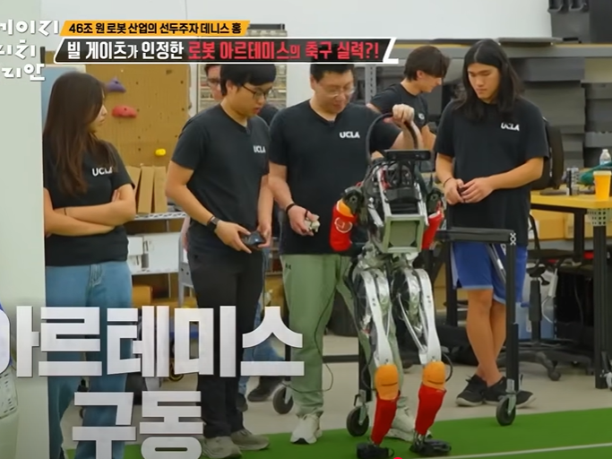
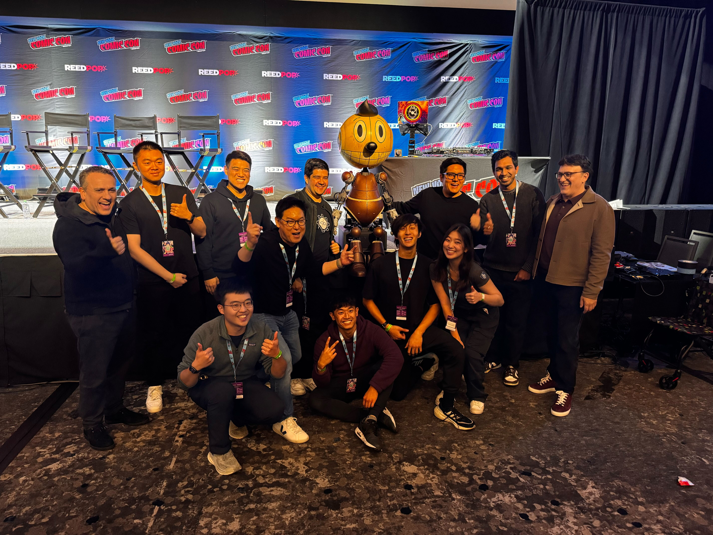
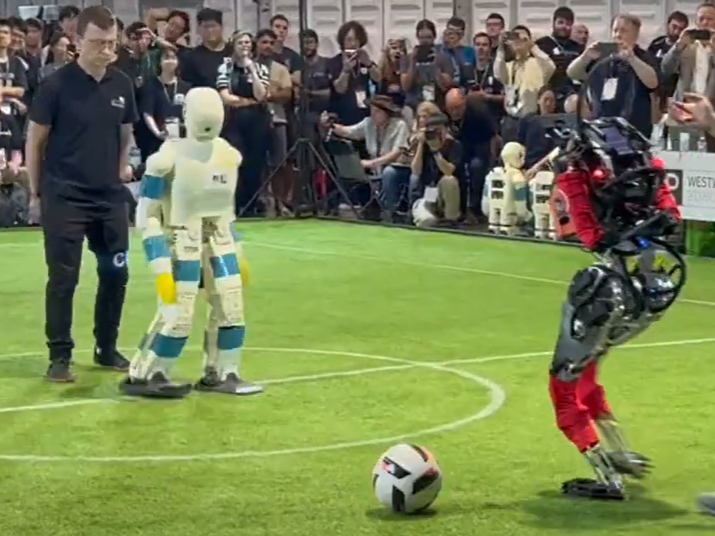

RoMeLa Documentary by KBS
A feature by KBS showcasing ARTEMIS and humanoid robotics at UCLA RoMeLa.
Broadcasted 2024
Research & academic service
, “MIDAS Hand: Modular low-Impedance Direct-drive Anthropomorphic Sensing Hand.” arXiv, 2026. Preprint.
, “DexEXO: A Wearability-First Dexterous Exoskeleton for Operator-Agnostic Demonstration and Learning.” IEEE/RSJ International Conference on Intelligent Robots and Systems (IROS), 2026. Accepted.
, “WHED: A Wearable Hand Exoskeleton for Natural, High-Quality Demonstration Collection.” arXiv, 2026. Withdrawn preprint.
, “A Hierarchical, Model-Based System for High-Performance Humanoid Soccer.” Advanced Intelligent Systems, 2026.
, “Fast and Robust Localization for Humanoid Soccer Robot via Iterative Landmark Matching.” International Conference on Ubiquitous Robots (UR), 2026.
, “From Screen to Stage: Kid Cosmo, A Life-Like, Torque-Controlled Humanoid for Entertainment Robotics.” IEEE-RAS International Conference on Humanoid Robots (Humanoids), 2025.
, “RoboCup 2024 Adult-Sized Humanoid Champions Guide for Hardware, Vision, and Strategy.” RoboCup 2024: Robot World Cup XXVII, Lecture Notes in Computer Science, Springer, 2025.
, “Re-Examining Climbing Robots: Design and Performance of a Lightweight, Low-Cost Robot with a Highly Extendable Limb.” International Conference on Reconfigurable Mechanisms and Robots (ReMAR), 2024.
, “A Lightweight Mobile Robot for Climbing Steel Structures With an Extending and Bending Tape Spring Limb.” ASME International Design Engineering Technical Conferences and Computers and Information in Engineering Conference (IDETC-CIE), 2023.
, “Optical Fiber Coupling System for Steerable Endoscopic Instruments.” Annual International Conference of the IEEE Engineering in Medicine & Biology Society (EMBC), 2021.
* Equal contribution.

A feature by KBS showcasing ARTEMIS and humanoid robotics at UCLA RoMeLa.
Broadcasted 2024

Behind the scenes of the humanoid movie character Kid Cosmo from The Electric State.
Published 2024

UCLA RoMeLa’s humanoid team wins the 2024 RoboCup World Championship.
Published 2024
A fun short featuring Kid Cosmo alongside Winnie from The Electric State.
YouTube Short 2024